土豆岛通用 UI 素材库 · 20 件独立素材 · 彩铅纸纹
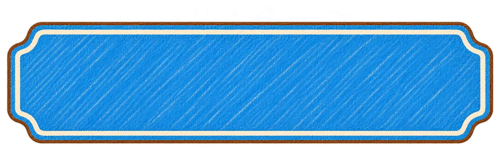
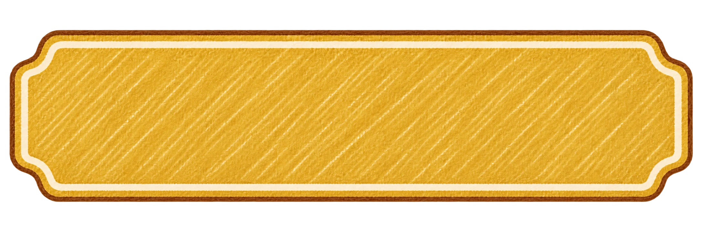
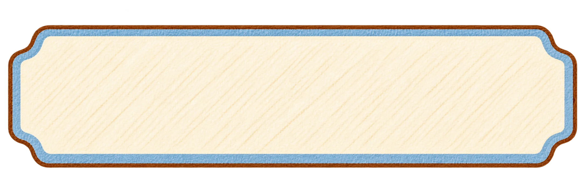
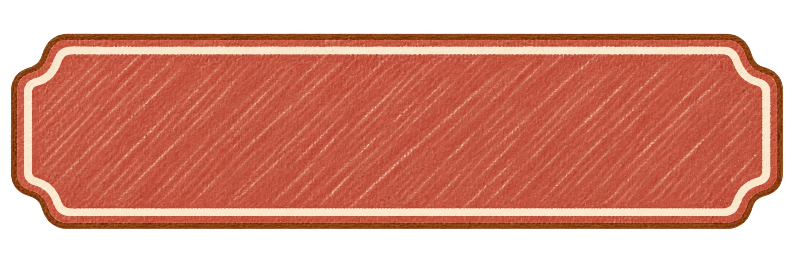
底图复用，文案按操作变化。这里是固定比例示意，正式组件的切片、焦点与禁用状态仍需逐屏验证。
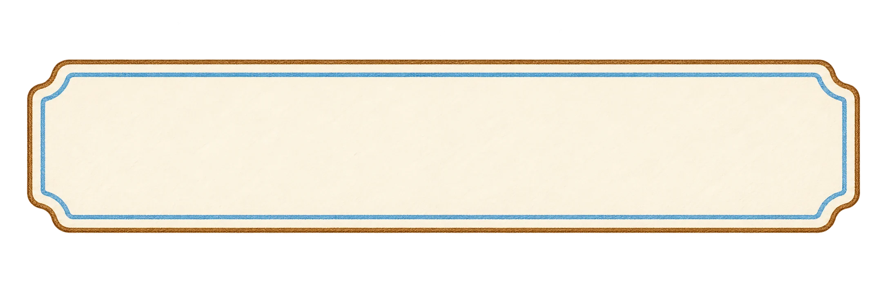
badge-neutral2172 × 724 · 152.1 KB
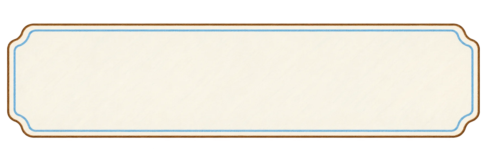
banner-notice2172 × 724 · 170.6 KB
button-danger-clay2172 × 724 · 193.7 KB
button-primary-blue2172 × 724 · 336.3 KB
button-secondary-ivory2172 × 724 · 140.0 KB
button-transaction-gold2172 × 724 · 187.5 KB
checkbox-checked1254 × 1254 · 439.4 KB
checkbox-unchecked1254 × 1254 · 197.3 KB
control-back1254 × 1254 · 232.0 KB
control-close1254 × 1254 · 237.4 KB
control-filter1254 × 1254 · 281.5 KB
control-search1254 × 1254 · 260.9 KB
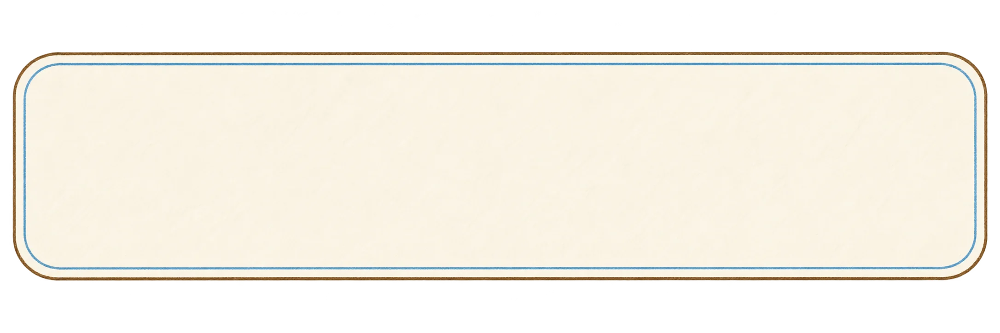
field-input2172 × 724 · 141.9 KB
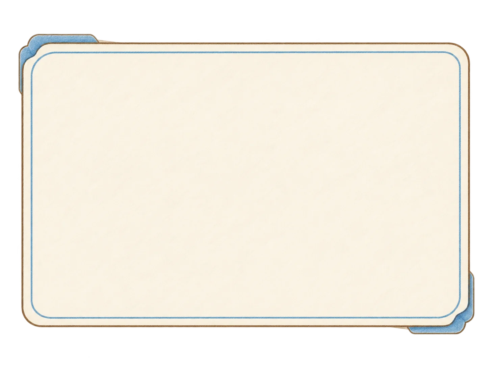
panel-confirm1448 × 1086 · 112.7 KB
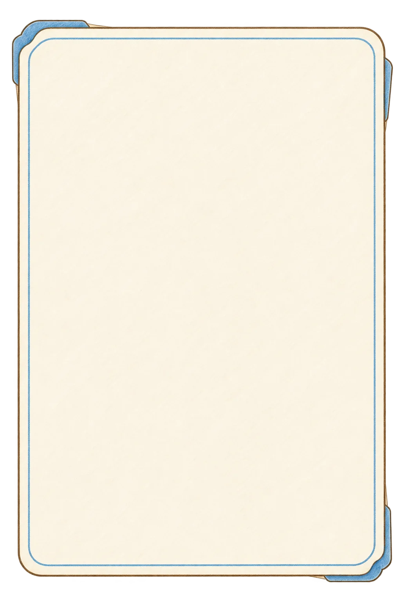
panel-drawer1024 × 1536 · 116.6 KB
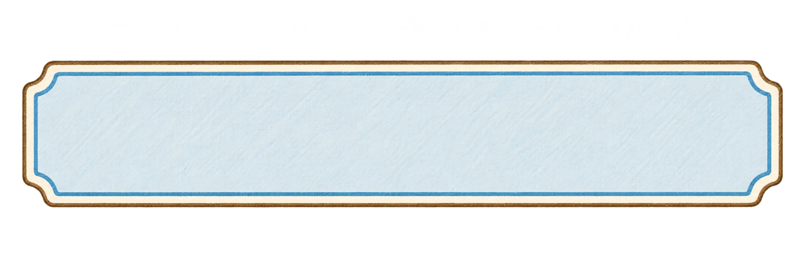
status-in-vault2172 × 724 · 206.9 KB
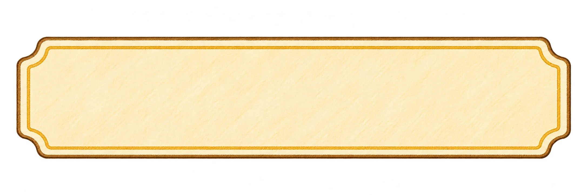
status-listed2172 × 724 · 245.0 KB
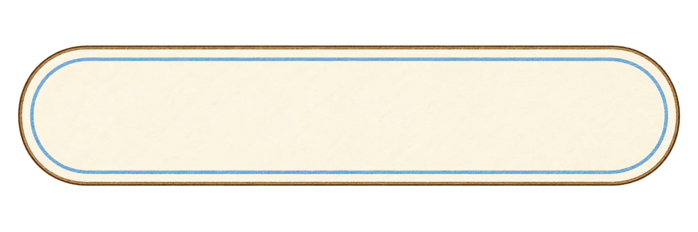
tab-default2172 × 724 · 177.4 KB
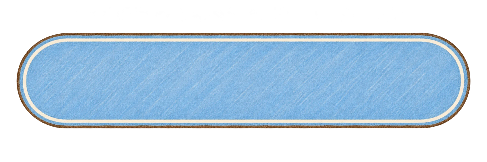
tab-selected2172 × 724 · 298.9 KB
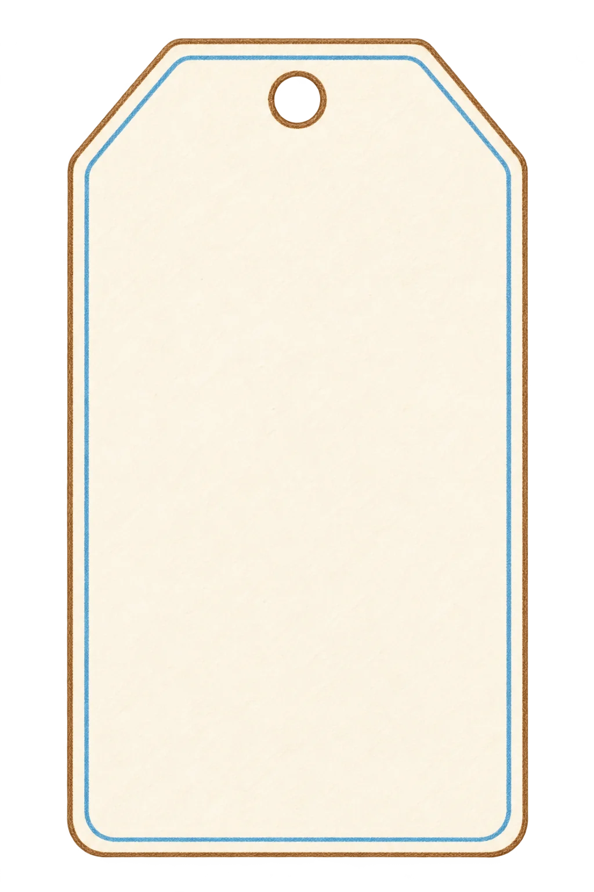
tag-serial1024 × 1536 · 138.7 KB